All public results
Hierarchical rollout tracking audit：GMR reference → SONIC physical execution
2026-07-22 · Q1.3a
15 representative clips
frozen SONIC · zero residual
Analysis: draft
审查范围严格限定为 15 条 representative GMR clips：比较 SONIC 实际收到的 reference 与其
MuJoCo physical execution。重点是直接观看 tracking 后出现的 delay、幅度、轨迹和局部 keypoint 差异。
1 · Conclusion
15 个代表性 clips 中最明显的问题是：动作越快、连续变化越多，physical execution
越容易跟不上 reference，表现为可直接看到的局部 delay。
Delay： wave-arms 最明显；kick 中手臂的 delay 也比腿部更清楚。该现象在
startup 后仍持续，不只是第一帧不重叠。Amplitude： delay 常伴随动作范围变化，但不是所有肢体一起缩小；wave-arms
出现右腕幅度变小、左腕过冲的左右不对称。Geometry： 动作仍可识别，但 EE trajectory、wrist/ankle keypoint 与 root/waist
会偏离；全身 MPJPE 不能表达误差集中在哪个肢体。Action dependence： 慢动作或部分 walk clips 在 overlay 中看起来较一致；tracking
问题的明显程度取决于动作动态性和身体部位。
2 · Method
Reference GMR-retargeted G1 motion
Controller released frozen SONIC ONNX
Execution MuJoCo physical rollout
Review overlay + plots + tables
如何评判
Public evidence scope： 本页包含解释结论所需的代表性视频、图表、指标与证据哈希；内部运行文档不属于公开材料。
3 · Results
01 · Wave arms · dynamic · val:1760:2:152:209
直接观看可以看到 execution 持续落后于蓝色 reference；右腕动作范围缩小，
左腕则过冲。腰部和双脚也有位置差，但 contact 与 slip 需要分开解释。
Overlap video：蓝色为 reference，实体为 execution。 EE peak/trough：显示局部 delay、右腕缩幅和左腕过冲。 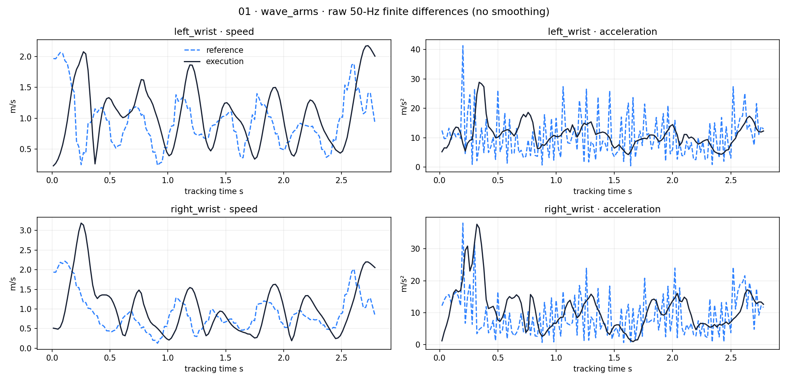
EE dynamics：velocity 的 delay/幅度可见；raw acceleration 高频噪声较强。 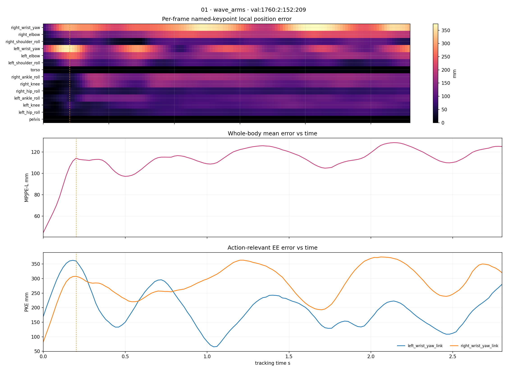
Keypoint heatmap：误差主要集中在左右 wrist。 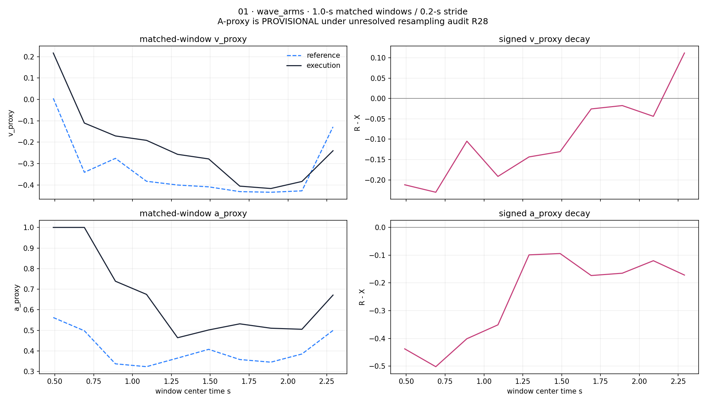
V/A decay：1.0-s matched windows，0.2-s stride；signed decay = reference − execution；A-proxy provisional。
02 · Kick · high-V · val:1883:0:0:82
手臂抬起存在明显 delay；腿部 tracking 相对更好。向前迈步的幅度较小，
使 execution 的整体位置比 reference 靠后；EE 图中的 y-axis 差异比视频观感更强。
Overlap video：手臂 delay 比踢腿本身更明显。 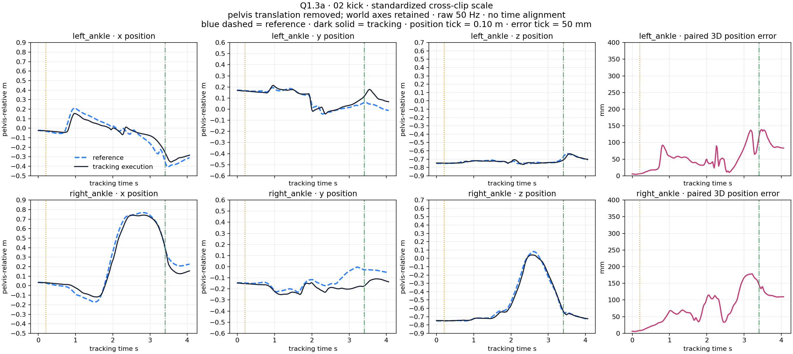
EE position-vs-time：显示 reference/execution 分轴差异。 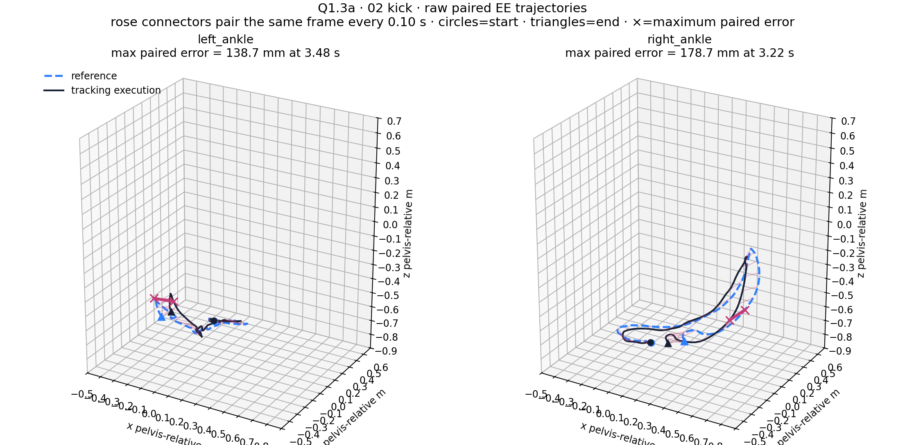
3D EE trajectory：空间路径差异比单一视角更清楚。 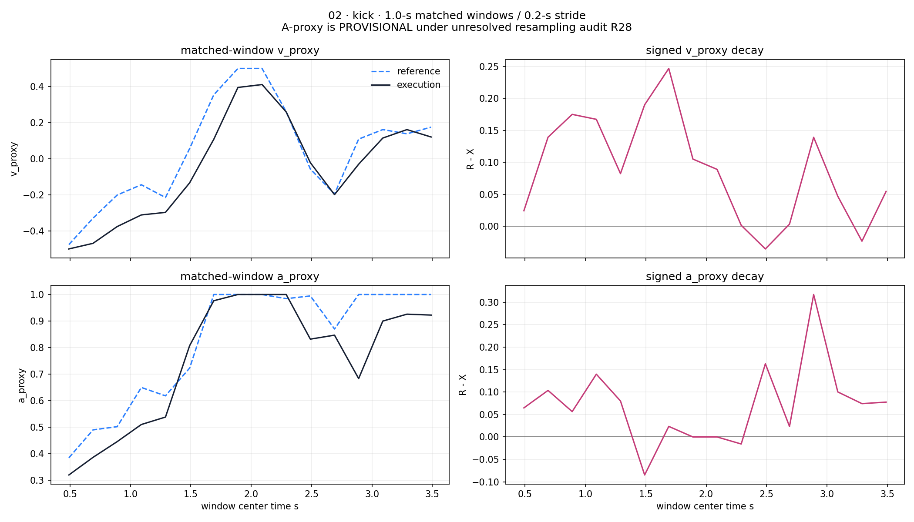
V/A decay：与该 kick 视频和 EE 轨迹使用相同的 tracking 时间段。
03 · Kick · typical · val:1056:1:109:166
与 high-V kick 相比，overlay 整体更一致，EE 差异也不明显；主要视觉疑问是
身体倾斜较大，看起来有稳定性风险。
Overlap video：reference 与 execution 总体接近。 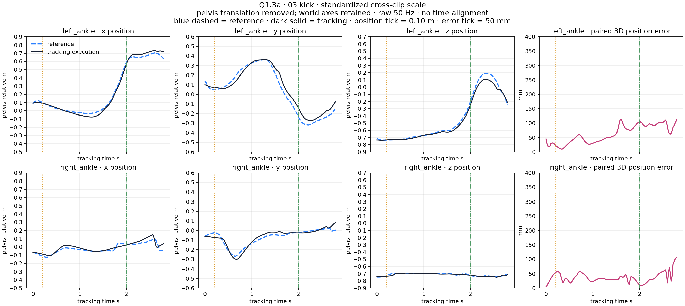
EE position-vs-time：仍有数值差异，但视觉影响较轻。 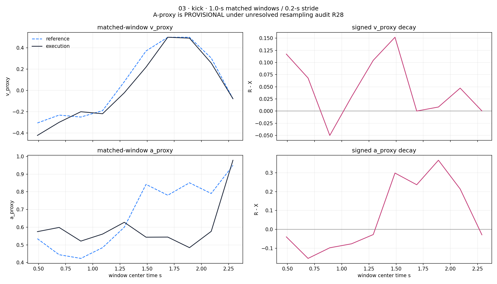
V/A decay：与 high-V kick 使用同一 matched-window 口径。
05 · Punch · low-V · val:452:1:247:463
用户确认这是代表性单侧上肢动作。数值误差主要集中在 right wrist，
适合直接检查 punch event 在物理跟随中的幅度和时序。
Punch overlap：蓝色为 reference，实体为 execution。 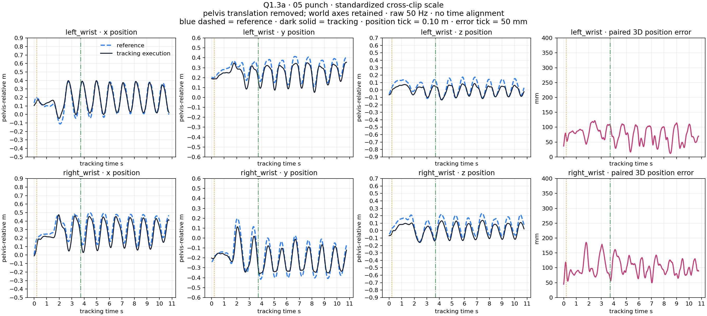
Punch EE position-vs-time：全宽显示左右 wrist 的 reference/execution 时序。 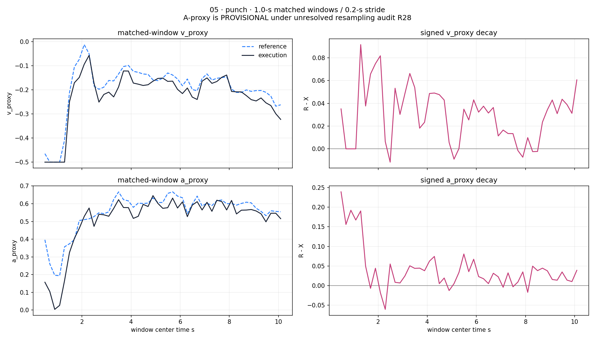
Punch V/A decay：显示 matched-window proxy 与 reference − execution 差值。
08 · Handshake · typical · val:63:1:553:706
用户确认这是代表性局部误差案例。全身 MPJPE-L 为中等水平，但
left-wrist MPKPE 明显更高，展示了全身平均如何掩盖局部 EE 问题。
Handshake overlap：蓝色为 reference，实体为 execution。 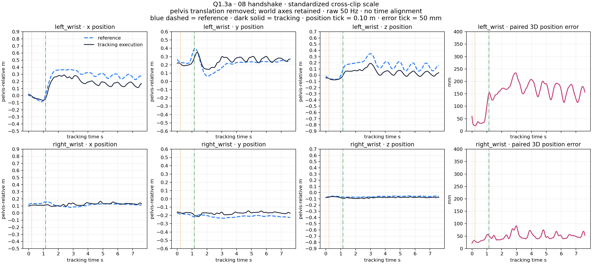
Handshake EE position-vs-time：全宽显示左右 wrist 的 reference/execution 时序。 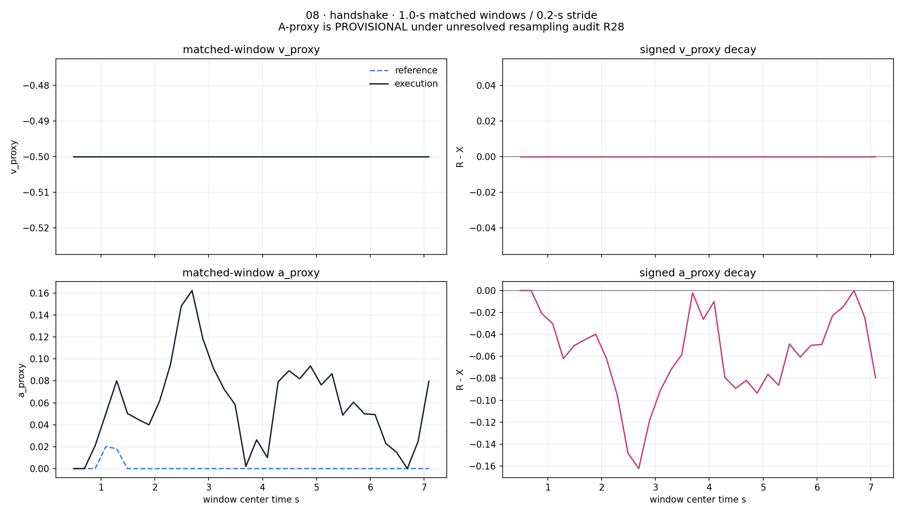
Handshake V/A decay：与局部 wrist error 并列审查，不将两者合并成总分。
06 · Walk · dynamic · val:1262:1:53:91
现有 overlay 中没有看到清楚的 root/leg separation；这是一个重要的
metric–visual mismatch：数值误差存在，但肉眼差异不如 wave-arms 明显。
Walk overlap：作为 visually subtle/negative anchor。 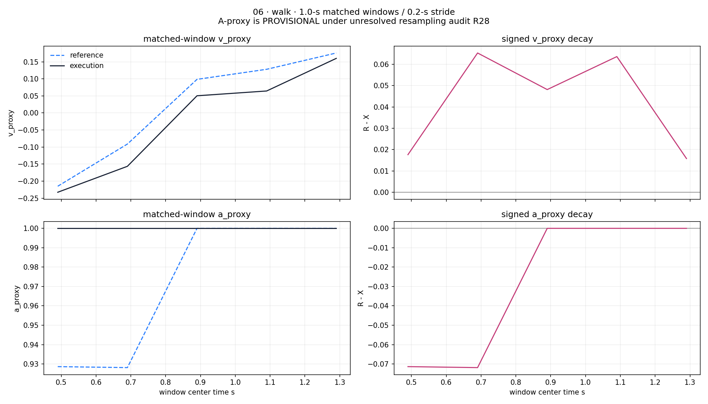
Walk V/A decay：与 overlay 的视觉负锚点并列审查。
15 representative clips · MPJPE/MPKPE overview
01 为 detailed anchor；02、03、06 有 clip-specific comments；05 和 08 作为典型证据展开；
其余为 broad review。表中数值不能替代逐条人工结论。
4 · Analysis 用户观察整理稿
Wave arms： overlap video 中 delay 非常直接，动作幅度和腰部/脚部位置也发生变化。
EE 图与 heatmap 进一步说明误差集中在 wrist；dynamics 图中的 velocity 同样显示晚到和幅度差，
acceleration 因二阶差分非常嘈杂。V/A 窗口图中 gap 随时间收窄并在末段变号，但用户对当前
V/A 滑动窗口量尺仍有疑问。Kick high-V： 手臂抬起的 delay 明显，但踢腿本身跟得更好；向前一步的幅度变小，
使整体 execution 靠后。EE 图的 y-axis gap 较大，却没有在单一相机视频中同样明显。Kick typical： reference 与 execution 看起来总体一致，EE 差异较轻；主要疑问是身体
倾斜较大、看上去不够稳定。Punch、handshake 与 walk： 用户认为 punch 和 handshake 也是代表性上肢跟随案例，
它们的最大 named MPKPE 均位于 wrist。dynamic walk 虽然数值误差不为零，但 overlay 中看不出
明显的 root/leg separation。
5 · Appendix
Calculations and evidence
Worked calculations
Right-wrist loss = 207.772152 − 121.850409 = 85.921743 mm
Right-wrist loss % = 85.921743 / 207.772152 = 41.353830%
Left-wrist overrun = 274.021274 − 177.395253 = 96.626021 mm
Left-wrist overrun % = 96.626021 / 177.395253 = 54.469338%
Wave uniform-lag gain = 115.359155 − 114.060918 = 1.298237 mm
Relative gain = 1.298237 / 115.359155 = 1.125387%
Continuous-clap accounting = 127 one-event + 57 zero-event = 184 eligible clips
Qualified three-event clips = 0Authoritative evidence
diverse_review_packet/evidence.json · SHA256
48fb4de6b98ac7b4ec4f71e65ea602647c80f269b7d69ee6cd3ad05c1dc09c9bdynamic_sonic_panel/evidence.json · SHA256
3930932ead82c7d05f15be0940ebfd01f742d8131950f4930ec6337eb8db177bcross_action_lag_panel/lag_anchor_probe/evidence.json · SHA256
e2a09800f245831463f2cb884c7cc76b9febb9c691f1ce0ca2e4d84bd96e0b24continuous_clap_candidate_probe/evidence.json · SHA256
ad132053bd7727f51faea54719c50fc69d6bc17b793604be40a806568b3b76b7
Publication scope
This standalone public copy includes every media asset used in the visible analysis. Evidence hashes are retained above for provenance; no private repository or runtime service is required.